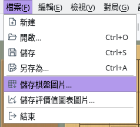
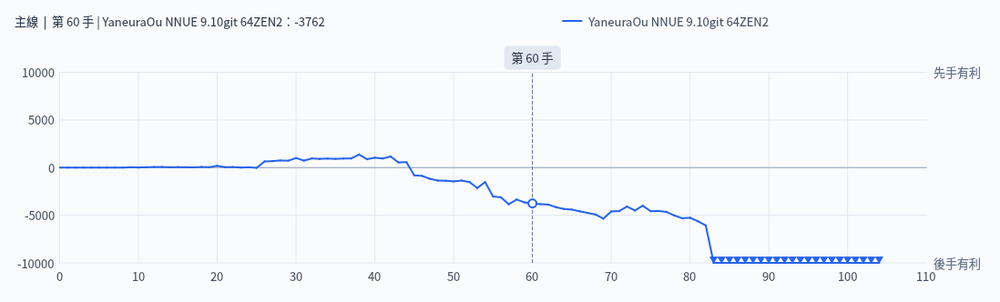

將棋盤和評價值圖表儲存或複製為圖片
截圖於 Linux 上以繁體中文介面擷取。
將棋盤和評價值圖表依畫面上顯示的樣子製作成圖片
選擇「檔案」→「儲存棋盤圖片…」或「儲存評價值圖表圖片…」即可把圖片儲存為檔案。在選擇儲存位置的視窗中可以選擇檔案類型（PNG、JPEG、WebP、BMP、TIFF 等，可用的格式因環境而異）。預設位置是圖片資料夾，檔名為「ShogiBoard_日期_時間.png」（評價值圖表為「EvalGraph_日期_時間.png」）。
如果想不儲存檔案而直接貼到文件或圖片編輯軟體中，可以選擇「編輯」→「複製棋盤圖片」或「複製評價值圖表圖片」複製到剪貼簿。複製的圖片與儲存的圖片相同。

「檔案」選單：儲存圖片的項目
將形勢變化儲存為圖表圖片
評價值圖表圖片依「評價值圖表」分頁中圖表的目前大小製作。圖中包含對局中引擎的評價值或棋譜分析的結果，以及目前著法的位置。
儲存前先顯示「評價值圖表」分頁並調整面板大小，就能得到想要的圖片大小。

匯出的評價值圖表圖片（棋譜分析的結果，顯示第 60 手）